The Bio Connect expo
Ideas in the lab.
Innovation on show.
Meet the organisations bringing life sciences research, products and expertise to the Bio Connect 4.0 expo.
Explore the exhibitors ↓Exhibitor directory
Meet your next
collaborator.
Discover the organisations joining the expo. Explore their work before you meet them in Thiruvananthapuram.
-
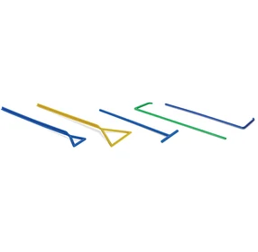
Confirmed exhibitorAbdos Labtech Pvt Ltd.
Abdos, a leading manufacturer of laboratory plasticwares, offering a comprehensive range of solutions to meet diverse laboratory requirements. Abdos’s state-of-the-art manufacturing facility, validated by ISO Class 8, is committed to providing the best-quality products to our customers. We offer plastic labware solutions for centrifuge techniques, cryo techniques, microbiology, cell culture, and PCR, along with multipurpose racks/boxes, bottles, and carboys.
-
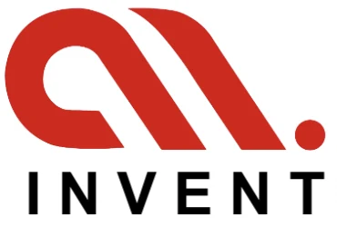
Confirmed exhibitorAccubits Invent Private Limited
Accubits Invent is a deep-science research lab dedicated to non-invasive disease screening, clinical air intelligence, and advanced material science, operating with the mission of "understanding life, one molecule at a time". Built at the Bio360 Life Sciences Park, the DSIR certified company was founded by PhD scientists specializing in chemical engineering and clinical research. At the core of its innovation is the VolTrac™ platform, which merges nano-polymer sensor arrays with AI-driven pattern recognition. To power these systems, the company develops and manufactures its own advanced materials, including carbon inks and conducting polymers. This full-stack approach enables room-temperature, ppb-level sensitivity for selected analytes, bridging fundamental molecular science with real-world applications. Backed by over 13 years of research expertise, 9 active patents, and 70+ publications, the company has a robust, deployable product pipeline. The current portfolio includes OBA-L™, an investigational breath-analysis device under CDSCO-approved clinical evaluation. The company also offers DeTecX™ for hospital air-hygiene monitoring, BrthX™ for wellness insights, and custom sensors for specialty chemical detection. As an NVIDIA Inception member, Accubits Invent converges material science and artificial intelligence to transform the global diagnostics and chemical-sensing markets into scalable hardware.
-
Confirmed exhibitor
Agappe Diagnostics Ltd
AGAPPE DIAGNOSTICS India’s Leading Diagnostics Innovator | Global Partner in Healthcare Technology Advancing Lives Through Care Agappe Diagnostics Ltd., founded in 1995 and headquartered in Kerala, India, is a comprehensive in vitro diagnostics company serving healthcare institutions in more than 90 countries. Agappe develops and manufactures reagents, instruments, laboratory automation, and point-of-care solutions, combining indigenous R&D, scalable manufacturing, and international technology partnerships to make quality diagnostics more accessible. AGAPPE AT A GLANCE 30 years of diagnostics expertise 1,100+ professionals Presence in 90+ countries 200,000 sq. ft. GMP and FDA-certified manufacturing facility for Reagents and Equipment 8 design patents and 3 technology patents with a CAGR of 22 % growth CORE CAPABILITIES • Clinical Chemistry & Immunoturbidimetry • CLIA & Immunodiagnostics • Nephelometry & Haematology • Point-of-Care & Veterinary Diagnostics • Laboratory Automation & Cloud-Enabled Solutions KEY INNOVATIONS Mispa i2: Patented compact analyzer for affordable protein diagnostics. Mispa i3: India’s first cartridge-based nephelometer and recipient of the 2018 National Innovation Award. Neurodegenerative biomarkers: Early-detection solutions using β-Amyloid and Phosphorylated Tau. GLOBAL COLLABORATION Fujirebio Holdings, Japan: Collaboration supporting local manufacture of advanced CLIA reagents; Agappe now offers 50+ CLIA assays. MBL Co., Ltd., Japan: Development and localization of advanced nephelometry reagents, strengthening quality assurance and technology transfer. SWITZERLAND SUBSIDIARY Agappe Diagnostics Switzerland GmbH, Agappe’s wholly owned subsidiary and global office in Cham, serves as a strategic gateway to Europe and other international markets. It supports distribution, customer access, business development, services, and international partner collaboration. TRUSTED PARTNER FOR GLOBAL GROWTH Agappe brings together Indian manufacturing scale, research-led innovation, regulatory-compliant quality, technology localization, and extensive emerging-market access. As it enters its fourth decade, the company is expanding across diagnostics, contract manufacturing, life sciences, biopharma, food safety, and environmental testing—with a vision to become the most respected Indian multinational diagnostic corporation globally by 2035.
-
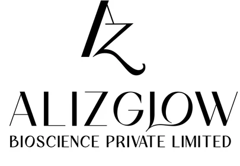
Confirmed exhibitorAlizglow Bioscience Pvt Ltd
We develop and manufacture science-led skincare products under our Alizglow brand, with a growing presence in the Indian and UAE markets. We also undertake pharmaceutical product manufacturing on demand, supporting businesses with product development and manufacturing capabilities. As part of our strategic expansion, we are developing an upcoming injectable manufacturing facility to strengthen our pharmaceutical manufacturing capabilities and build a broader life sciences platform.
-
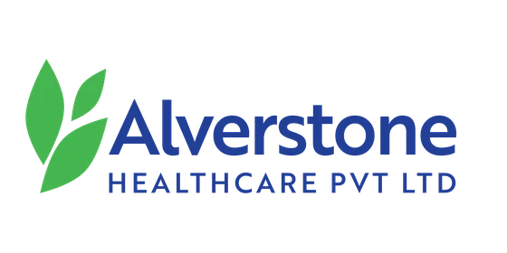
Confirmed exhibitorALVERSTONE HEALTHCARE PVT LTD
Alverstone Healthcare is a growing healthcare organization focused on pharmaceuticals, healthcare solutions, investments, and technology. With innovation and quality at our core, we aim to build a stronger, more accessible healthcare ecosystem for Kerala and beyond.
-
Confirmed exhibitor
BANK OF BARODA
Bank of baroda Regional Office Trivandrum
-
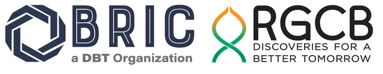
Confirmed exhibitorBRIC- Rajiv Gandhi Center For Biotechnology & KRIBS BIONEST
The BRIC-Rajiv Gandhi Centre for Biotechnology (RGCB) is a premier, autonomous national research institute located in Thiruvananthapuram, Kerala, India. Operating under the Department of Biotechnology (DBT), Ministry of Science and Technology, Government of India, the institution is dedicated to advanced research in Disease Biology (human, animal, and plant diseases), translation, and discovery. KRIBS-BioNest is a state-of-the-art biotechnology incubation center, jointly managed by BRIC - Rajiv Gandhi Centre for Biotechnology (RGCB) and Kerala Startup Mission (KSUM).
-
Confirmed exhibitor
CENTER FOR RESEARCH ON MOLECULAR AND APPLIED SCIENCES
PRE CLINICAL CONTRACT RESEARCH SERVICES MANUFACTURING OF MODIFIED AYURVEDIC PRODUCTS
-
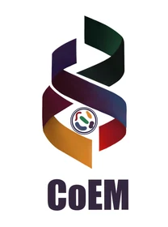
Confirmed exhibitorCentre of Excellence in Microbiome
Centre of Excellence in Microbiome is an institution under Govt. of Kerala initiated to leverage emerging technologies such as big data and AI to promote a multidisciplinary, transdisciplinary and multi-stakeholder approach towards translational research and development for bringing out products and services to societyin the field of Human, Animal, Plant, Aquatic and Environment Microbiomes..
-
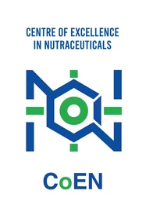
Confirmed exhibitorCentre of Excellence in Nutraceuticals
Centre of Excellence in Nutraceuticals (CoEN), established by the Government of Kerala under KSCSTE, serves as a dedicated platform for research, validation, development, and translation of nutraceuticals and functional foods. By integrating traditional knowledge with modern scientific evaluation, the Centre develops safe, effective, and regulatory-compliant nutraceutical solutions addressing public health priorities including metabolic wellness, micronutrient support, digestive health, immunity enhancement, and preventive healthcare. Through its structured Research–Industry Interface, CoEN supports collaboration with academia, MSMEs, startups, healthcare institutions, and industries for translating evidence-based innovations into scalable and affordable nutraceutical products.
-
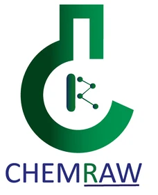
Confirmed exhibitorChemRaw Tech
ChemRaw Tech is an advanced Research & Development enterprise specializing in next-generation polymeric materials. By synergizing the disciplines of Engineering, Chemistry and Biology, we design and engineer cutting-edge material solutions that address complex scientific and commercial challenges. Building upon our foundational expertise in polymer science, ChemRaw Tech also develops high-performance specialty chemicals and innovative biocare products. Our specialized research portfolios encompass advanced wound healing technologies and premium nutraceuticals. In these sectors, we apply our multidisciplinary capabilities to formulate safe, effective and scientifically rigorous products that meet the highest industry standards.
-
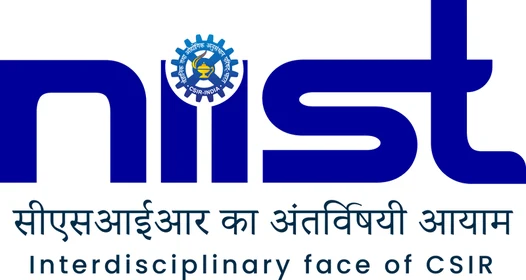
Confirmed exhibitorCSIR-NIIST, Thiruvananthapuram
CSIR-NIIST, Thiruvananthapuram is a premier research Institute under CSIR and is located at Industrial Estate, Pappanamcode, Thiruvananthapuram
-
Confirmed exhibitor
D2R Global Consulting
Founded in 2018, D2R Global Consulting is a boutique consulting firm specialises in guiding Medical Device, SaMD (Software as a Medical Device), IVD, and Biotech companies through complex engineering, regulatory, and certification challenges. With expertise in India, the US, the EU, and global markets, we provide end-to-end support so you can focus on innovation while we manage compliance.
-
Confirmed exhibitor
Department of Biomedical Engineering – TKM Institute of Technology
The Department of Biomedical Engineering at TKM Institute of Technology is dedicated to bridging healthcare and technology through education, research, and innovation. We equip students with strong foundations in biomedical instrumentation, medical imaging, biomechanics, rehabilitation engineering, and AI in healthcare, while also providing practical expertise in medical device prototyping, embedded systems, IoT, signal and image processing, and healthcare IT. With project-based learning, internships, and exposure to regulatory standards, our students are trained to design and deliver solutions for real-world healthcare challenges with innovation and responsibility, offering the industry a pool of adaptable, skilled, and innovative professionals who combine engineering expertise with healthcare insights and are ready to contribute as engineers, problem-solvers, and collaborators in advancing healthcare technology.
-
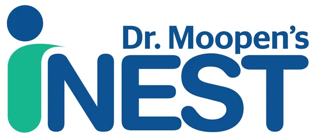
Confirmed exhibitorDr MOOPENS INEST
Healthcare Incubation Centre
-
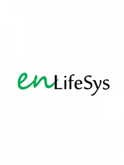
Confirmed exhibitorENLIFESYS PRIVATE LIMITED
enLifesys, the medical-device division of enProducts Pvt. Ltd., focuses on developing and manufacturing innovative healthcare and biomedical technologies, including therapeutic devices, neonatal phototherapy solutions, measurement systems, robotics and automation-based medical technologies. We develop cost-effective, reliable and locally engineered solutions through R&D, prototyping, validation and regulatory-compliant manufacturing.
-
Confirmed exhibitor
Federal Bank
Federal Bank Mangalapuram Branch
-
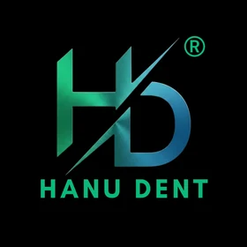
Confirmed exhibitorHanumat Global pvt ltd
Hanumat is an India-based dental healthcare company focused on the development, manufacturing, distribution, and global marketing of innovative dental products. With strong expertise in endodontics and dental consumables, we are committed to delivering reliable, high-performance products that combine quality, innovation, and competitive pricing. Our portfolio includes endodontic instruments and dental materials, developed with a strong focus on clinical performance, durability, and practical requirements of dental professionals. Through our own brand, Hanu Dent, we are building a growing range of products designed and manufactured in India. With experience across dental product development, manufacturing, regulatory compliance, international trade, marketing, and distribution, Hanumat works closely with dentists, distributors, and industry professionals to understand market needs and develop products accordingly. Our vision is to establish Hanumat as a globally recognized Indian dental healthcare company, bringing innovative and value-driven dental solutions to markets across India and internationally. Hanumat Indian innovation. Global dental solutions.
-
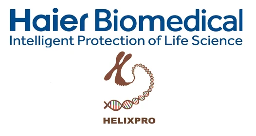
Confirmed exhibitorHELIXPRO
Distributor for Haier Biomedical
-
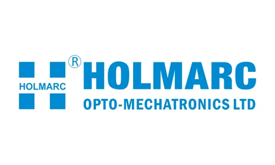
Confirmed exhibitorHolmarc Opto-Mechatronics Ltd
Holmarc Opto-Mechatronics Ltd. is an Indian manufacturer of scientific and engineering instruments for research, industry and education, with over 30 years of experience. With in-house expertise in optics, optomechanics, electronics and software, Holmarc develops and manufactures both standard and customised solutions across areas including spectroscopy, microscopy, holography and thin-film technology.
-
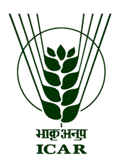
Confirmed exhibitorICAR Central Tuber Crops Research Institute
ICAR–Central Tuber Crops Research Institute (ICAR-CTCRI), Thiruvananthapuram, is a premier research institute functioning under the Indian Council of Agricultural Research (ICAR), New Delhi. The institute is dedicated to research and development on tropical tuber crops such as cassava, sweet potato, yams, taro and other root and tuber crops. Its research spans crop improvement, production, protection, post-harvest management, value addition and mechanization. ICAR-CTCRI also promotes technology transfer, entrepreneurship and sustainable livelihoods through partnerships with farmers, industries and other stakeholders.
-
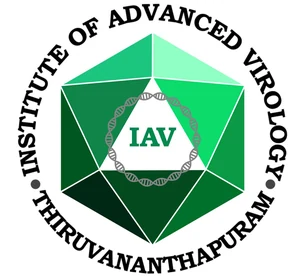
Confirmed exhibitorINSTITUTE OF ADVANCED VIROLOGY
Institute of Advanced Virology was established in 2019 in the Bio 360 Life Sciences Park, Thonnakkal, Thiruvananthapuram by the Government of Kerala as an institute of global standards with advanced laboratories focusing on research, diagnosis and management of emerging and re-emerging viral diseases. The Institute envisions to harness the best and eliminate the worst of viruses for a better human life. The research programmes of the Institute intend to strengthen epidemic preparedness, rapid response and risk communication to the public, apart from the high-end research in the areas of basic as well as translational virology. All eight departments, which were identified to conceive and execute projects in the selected domains to achieve the vision and mission of the institute as per DPR, are currently functional and implement various research projects, both plan-funded and extramural-funded projects , consultancy and validation projects. The ongoing plan-fund-supported projects in the Institute are being implemented under three major flagship themes. Under each flagship theme, specific projects that have the potential to generate TRL6-readiness products that can be translated to the industry for scaling up and industrial production are included. The institute also aims for a participatory R&D programme with private industries towards co-development of products which are of critical need of the hour and having the potential for marketability. The Institute provides incubation facilities for startups in the field of Virology, and an R&D facility for established industries to enhance their capabilities by utilising the expertise and facilities available at the Institute. These activities are intended to support and create a conducive ecosystem for the development of the life science industries in Kerala. In order to create a talented pool of human resources in the specialised domain of virology, Doctoral programmes in Virology are offered. The institute also provides internship opportunities for graduates and postgraduates in the subject of life sciences. Certificate/Diploma courses in virology and allied subjects with a special focus on hands-on training in a dedicated BSL 2 level training laboratory are also offered. Institute of Advanced Virology currently have 14 fully operational BSL 2 level labs, an NABL-accredited Advanced Molecular Diagnostic Facility capable of detecting 80+ viral parameters, Core Instrumentation Facility with high-end equipment, Small Animal Experimental Facility, DBT SAHAJ facility (for protein production), AMR Phage Display Facility, Synthetic Chemistry Laboratory, Virology Incubation Facility (ITFC-IAV) and other support systems essential for conducting high-end and translatable research in virology and associated domains. A BSL 3 facility for conducting research in highly pathogenic viruses is nearing completion.
-
Confirmed exhibitor
IQZYME MEDTECH PVT LTD
IQZYME MEDTECH PVT LTD is a ISO 9001:2015 certified medical technology and quality consulting firm specializing in the strategic areas of design, development, quality assurance, regulatory affairs, facility management and turnkey project consultation across medical devices, in vitro diagnostics and pharmaceuticals industries. We collaborate with manufacturers, research organizations, and academic institutions to ensure compliance with global regulatory and quality standards—guiding them seamlessly from concept to commercialization. An ISO 9001: 2015 certified organization, IQZYME is also the only service-sector member of the Association of Diagnostics Manufacturers of India (ADMI). Headquartered in Cochin, with a strong presence in Mumbai, Bengaluru, Coimbatore, and Bio 360 Park, Thiruvananthapuram, we provide end-to-end consulting services to help our clients achieve global market readiness and sustainable regulatory compliance.
-
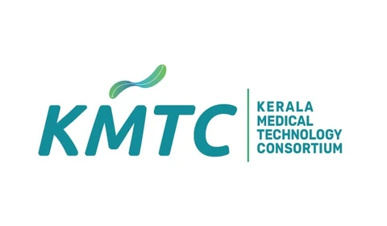
Confirmed exhibitorKERALA MEDICAL MEDICAL TECHNOLOGY CONSORTIUM
Kerala Medical Technology Consortium (KMTC) is a flagship initiative from the Governement of Kerala to promote the Medtech Ecosytem in the state adhering to the unique cluster model ecosytem that the Medical Devices warrants. The Organisation operates with a vision of making Kerala the Medical Devices Hub of the country and one among the top 20 globally by 2032. It propogates the realisation of this vision by accelerating Medical Device manufacturing and technology in Kerala by fostering an ecosystem of knowledge sharing between Research Organizations, Academic Institutions, Industry, Healthcare Institutions and Government.
-
Confirmed exhibitor
Kerala Rubber Limited
Kerala Rubber Limited (KRL) is a company formed by the Government of Keralam for the promotion of natural rubber-based industries, with a special focus on Micro, Small and Medium Enterprises (MSMEs). The Company is located at Velloor Village, Vaikom Taluk, Kottayam District, Kerala. The major initiatives planned under the KRL Industrial Complex include Research and Development, Testing and Quality Control, Business Incubation, Training and Information Centre, Rubber Products Exhibition , Rubber Products Sterilisation etc..
-
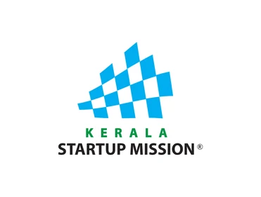
Confirmed exhibitorKerala Startup Mission
Kerala Startup Mission is the nodal agency of the government of Kerala for promoting entrepreneurship in the state.
-
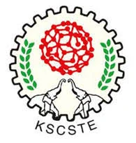
Confirmed exhibitorKerala State Council for Science, Technology and Environment
The Kerala State Council for Science, Technology and Environment (KSCSTE) is an autonomous body under Science and Technology Department, Government of Kerala, constituted in November 2002 vide GO(P) No. 76/2002/STED to be an agency for change and development through Science and Technology. Formerly it was the Science, Technology and Environment Committee (STEC), established in 1972 in concurrence with the Science Policy of Government of India. The council promotes and activates programmes for increasing the stock of knowledge in science, and fine tunes policies which are significant and for the sustained development of humanity. The council prepares the road map for development through scientific research and innovation in technologies. Achieving excellence in basic research, academia-industry interactions, strengthening indigenous initiatives, and building strong infrastructure and developing a high quality science education system in the state are our targeted goals. This has been achieved through various schemes and programs and by the R &D organisations established by the council.
-
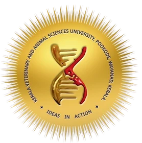
Confirmed exhibitorKerala Veterinary and Animal Sciences University
The Bioscience and Regional Research Training Centres are constituent units of Kerala Veterinary and Animal Sciences University, located at KLIP, and serve as centres for meeting the diagnostic, research, and training needs of life science professionals and other stakeholders in the livestock and life science sectors.
-
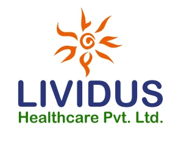
Confirmed exhibitorLividus Healthcare
Lividus Healthcare pvt Ltd has started their production facility with 20000 sqft in the park in the year 2024. The company have acquired about 11 product licenses already and other some about 80 products are under test license. At present we have finished all other remaining civil works for the total proposed built up area of around 100,000 sqft and its plant and machinery commissioning and installation is expected to be finished by coming July 2027.
-
Confirmed exhibitor
lowtouch.ai (HybCloud Technologies)
lowtouch.ai is a private, no-code agentic AI platform built by HybCloud Technologies (P) Ltd. It helps enterprises in Banking, Insurance, Healthcare, Pharma, Retail, IT and more put autonomous AI agents to work. The platform turns existing applications, APIs and data into intelligent digital co-workers that automate workflows and drive faster decisions, all within the enterprise's own secure infrastructure. lowtouch.ai offers a catalog of pre-built enterprise agents spanning SRE, FinOps, HR, Help Desk, Compliance, Data Migration, RFP/DDQ automation, Loan Portfolio Management, KYC and Pharmacovigilance (PV). Each agent is customizable, securely governed and transparently monitored. Every agent runs on a modular, Open AI-compatible architecture with private LLM hosting (Llama, Claude, Gemini, Nemotron), vector-database intelligence, Apache Airflow orchestration and human-in-the-loop approval gates for critical workflows. Backed by ISO 27001 and SOC 2 Type II certification, lowtouch.ai delivers privacy-by-design, regulatory-ready automation (GDPR, RBI and HIPAA-compliant deployments). It helps enterprises achieve up to 50% faster AI adoption, 30% cost reduction and 100% regulatory compliance.
-
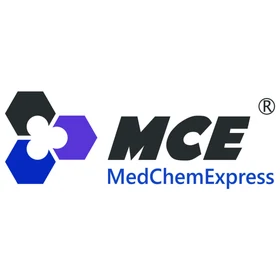
Confirmed exhibitorMedChemExpress
MedChemExpress (MCE) is a leading global supplier of life science research products and services, dedicated to accelerating scientific research and drug development. We provide a comprehensive portfolio of high-quality products, including inhibitors, diverse compound libraries, recombinant proteins, and antibodies. In addition, our experienced scientific team offers an end-to-end service system covering drug discovery screening, custom synthesis, data analysis, and bioactivity evaluation. Backed by stringent quality control standards, MCE serves more than 15,000 research institutions worldwide as a trusted partner in research innovation.
-
Confirmed exhibitor
Molecular Devices
Our integrated hardware and software solutions enable automated workflows—from start to finish—for any research application. Whether its cell line development, 3D biology, drug screening—or a combination of the three—our technology maximizes throughput and reproducibility to give researchers more time and greater insights.
-
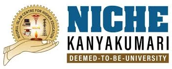
Confirmed exhibitorNoorul Islam Center for Higher Education
Noorul Islam Center for Higher Education, formerly Noorul Islam College of Engineering, is a private co-educational institution in Kumarakovil, Thuckalay, Kanyakumari District, Tamil Nadu, India. Address- Noorul Islam Center for Higher Education (NICHE), Thuckalay, Kumaracoil, Tamil Nadu 629180
-
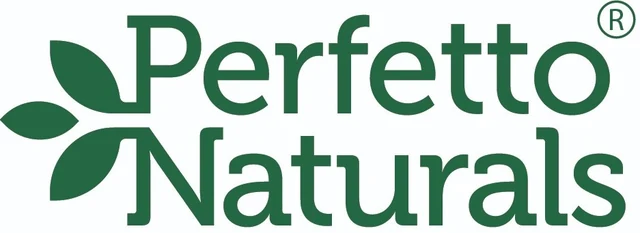
Confirmed exhibitorPERFETTO NATURALS PRIVATE LIMITED
Perfetto Naturals Pvt. Ltd. is a food processing and natural ingredients company based in Wayanad, Kerala, India. Our integrated facility spans approximately 15 hectares, with around 200,000 sq. ft. of infrastructure, offering a wide range of processing capabilities under one platform. These include coffee processing and roasting, spice processing, essential oils and oleoresins, Supercritical CO₂ extraction, natural extracts, seasonings, ready-to-eat and frozen products, steam sterilization, drying, cleaning, grading and automated packing.
-
Confirmed exhibitor
PhyEcoSyS Pvt. Ltd.
We are an "Algal science and innovation company" developing practical solutions powered by microalgae and nature-based technologies. We work at the intersection of algal biotechnology, water and environmental restoration, circular bioeconomy, and sustainable product innovation. Our work spans the development of microalgal cultures and bioproducts, algal-based water remediation systems, ecosystem restoration technologies, bioresource valorization, and innovative living algal products.
-
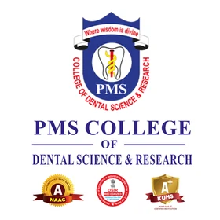
Confirmed exhibitorPMS College of Dental Science & Research
PMS College of Dental Science and Research, located in Kerala, is widely recognized as one of the best dental colleges in Kerala. The college has a range of international and national collaborations, as well as advanced dental care facilities and a commitment to high-quality dental research. These salient features make PMS College of Dental Science and Research a top choice for students looking to pursue a career in dentistry.
-
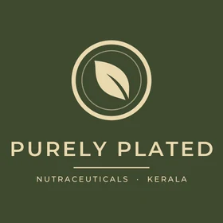
Confirmed exhibitorPurely Plated LLP
We develop science-led functional nutrition for Indian and export markets, and we partner with brands that want to take a product from idea to shelf.
-
Confirmed exhibitor
Puthran & Associates
Intellectual Property Attorneys
-
Confirmed exhibitor
Rajagiri College of Social Sciences
Rajagiri College of Social Sciences (Autonomous), established in 1955 and managed by the Congregation of Carmelites of Mary Immaculate (CMI), is a premier institution at the forefront of higher education in India. With a legacy built on excellence, innovation, and social transformation, Rajagiri continues to redefine education through a commitment to academic rigor, values-based learning, and community engagement. The college was conferred Autonomous Status by UGC in 2014, and is Affiliated with Mahatma Gandhi University, Kottayam, and re-accredited NAAC A++ (CGPA 3.83/4) in the 4th Cycle. The College upholds its motto “Learn, Serve, Excel” while offering doctoral programmes, undergraduate, postgraduate and across Social Work, Computer Science, Commerce, Psychology, Library & Information Science, Statistics, Management Studies at the Hill Campus (Kalamassery) and Business Administration and Personnel Management at the Valley Campus (Kakkanad). The College offers 25 programmes across 9 departments, fostering academic excellence and professional competence. The spirit behind Rajagiri College can be caught in the catchphrase: “Relentlessly Towards Excellence” and drives the vision of the College. In the latest National Institutional Ranking Framework (NIRF) 2025, RCSS secured 12th position in India, reflecting its academic excellence and national prominence. The College has consistently achieved top positions in national rankings, including India Today and Outlook, and within the state, it proudly holds the 1st position in Kerala according to the Kerala Institutional Ranking Framework (KIRF). The MBA and PGDM programs are accredited by the National Board of Accreditation (NBA), underscoring their high academic standards and industry relevance. Our Rajagiri Business School is internationally recognized with dual accreditations from AACSB (USA) and EFMD EPAS (Europe), placing it among an elite group of global business schools. Further, the college has integrated globally recognized professional qualifications such as CIMA and ACCA (UK) into its curriculum, reinforcing its commitment to professional excellence, employability, and global readiness. The College also offers AICTE-approved programmes and has earned a 3-Star rating (2023–24) from the Institution Innovation Council (IIC), affirming its leadership in academic, professional, and research excellence.The Department of Bioscience, Rajagiri College of Social Sciences, undertakes state-of-the-art interdisciplinary research spanning plant biotechnology, phytochemistry and drug design, ethnopharmacology, microbiology, environmental biotechnology, food technology, entomology, and mushroom cultivation. Our research integrates farmers, communities, and nature-based solutions to develop innovative bioproducts for societal well-being and environmental protection, reflected through high-quality publications, patents, products, industry collaborations, and externally funded projects from funding agencies.
-
Confirmed exhibitor
Sascan Meditech Pvt Ltd
Sascan Meditech Pvt. Ltd. is a medical technology company focused on developing innovative diagnostic and therapeutic devices, particularly in cancer detection, biopsy guidance, and photobiomodulation. Its flagship OralScan platform uses advanced optical imaging technology to support early detection of oral abnormalities and guided clinical decision-making.
-
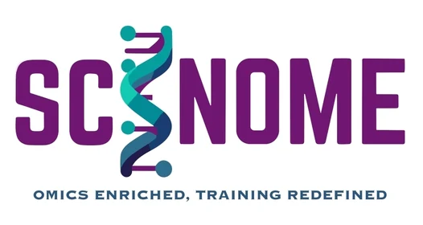
Confirmed exhibitorScinome Consulting and Training Services
Scinome Consulting & Training Services is a Biotechnology consultancy specializing in omics-driven research, bioinformatics, genomics, and biomedical data analysis. Scinome supports research institutions, biotechnology and pharmaceutical organizations, and emerging life science companies in converting complex biological data into meaningful scientific insights. Our expertise includes genomics, transcriptomics, proteomics, network pharmacology, drug discovery, and data-driven biomedical research. Alongside consultancy services, Scinome provides industry-oriented internships and Bio-IT training, offering students hands-on exposure to real-world omics datasets, computational workflows, research projects, and scientific problem-solving under professional mentorship.
-
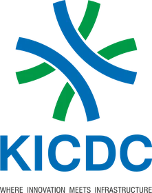
Confirmed exhibitorTHE KERALA INDUSTRIAL CORRIDOR DEVELOPMENT DEVELOPMENT CORPORATION LIMITED
The Kerala Industrial Corridor Development Corporation Limited (KICDC) is a dedicated Special Purpose Vehicle (SPV) formed with 50:50 equity partnership between Kerala Industrial Infrastructure Development Corporation (KINFRA), the state-level body focused on industrial infrastructure development in Kerala and the National Industrial Corridor Development and Implementation Trust (NICDIT), under the guidance of the National Industrial Corridor Development Corporation (NICDC). KICDC’s primary mission is to accelerate industrial growth in Kerala by executing the Kochi Bengaluru Industrial Corridor (KBIC) project, which is designed to boost regional competitiveness, attract high-value investments, and promote innovation-led enterprises. At the heart of this strategy is the development of Integrated Manufacturing Clusters (IMCs) equipped with world-class infrastructure to facilitate ease of doing business and foster industrial excellence.
-
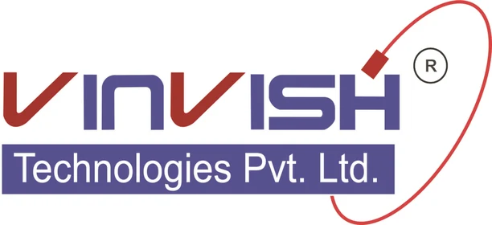
Confirmed exhibitorVinvish Technologies Pvt. Ltd.
Vinvish Technologies Pvt. Ltd. is a Company incorporated under Companies Act, 1956 on 17th day of December, 2004. Vinvish caters to the requirement of global and domestic customers in the design and development of Opto electronics based systems. With successful experience in executing over five hundred projects, the design team consists of experts in opto electronics, high speed electronics, embedded software and mechanical, carefully orchestrated to offer onestop- shop solution to our customers. Vinvish is managed by a team of vibrant and leading professionals in respective areas and also work in close association with India’s premier research institutions. Vinvish is an ISO 9001:2015,ISO 13485:2016,AS9100 RevD and ZED certified Company. Vinvish is a pioneer in the field of opto electronics. We have the capability to manufacture low, medium and high volume complex opto electro mechanical systems. We have in house manufacturing facility and a full-fledged testing facility to execute the projects in house. Vinvish offers design and development services to customers in space, defence, aerospace, telecom, healthcare and industrial sectors. These services can be turnkey solutions from design to final product or ala karte terms on reengineering, proto type development, test system development etc. We have been catering to global customers in the design and development of opto electronics based systems. The team consists of experts in opto electronics, high speed electronics, embedded software and mechanical, carefully orchestrated to offer onestop- shop solutions to our customers from design to production
-
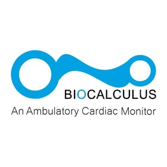
Confirmed exhibitorWaferchips Techno Solutions Pvt Ltd
cardiac rhythm study provider
-
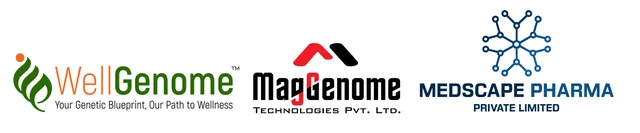
Confirmed exhibitorWellGenome, Medscape Pharma, MagGenome
WellGenome merge the latest advancements in genomics, bioinformatics, and nutritional science to deliver personalized health solutions. MagGenome is a pioneer in the development of next-generation magnetic nanoparticle-based rapid nucleic acid extraction products. These kits avoid organic solvents, rely less on centrifugation, provide scalability, higher purity and yield than traditional or column-based methods.
The line-up grows as participation is confirmed. Company profiles are supplied by the exhibitors.
Be part of Bio ConnectBio Connect 4.0